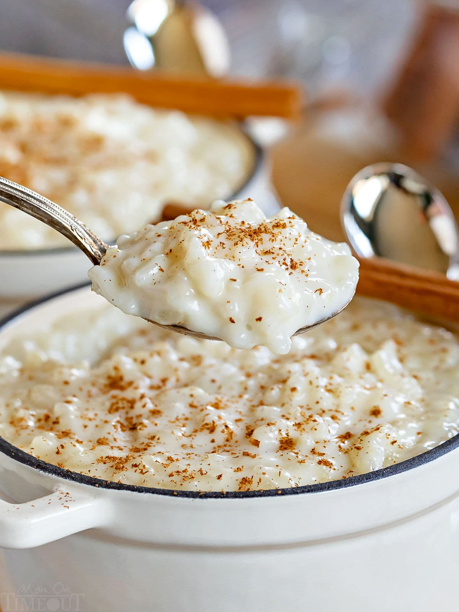

Rice Pudding

Description
Just seven ingredients are barring you from one of the most cozy deserts on the planet.
Ingredients
- 4½ cups whole milk
- 1½ cups water
- ¾ cup granualated sugar
- 1 cinnamon stick
- 1 cup Arborio rice
- 1 teaspoon vanilla bean paste
- ⅔ cup golden rasins
Instructions
- In a heavy bottomed 3 quart sauce pan, add the milk, water, sugar, cinnamon stick, and rice. Stir to combine.
- Bring to a simmer below boiling over medium heat. Stir often. Reduce the heat to maintain a steady simmer, stir until the rice is tender(35-45min). The mixture should have the consistency of thin oatmeal initally. Liquid will reamin.
- Remove from heat and remove the cinammon stick. Stir in the vanilla bean paste and rasins.
- Spoon the rice pudding into whatever storage method(s) you intend to use. Let them cool before serving.
- Top with ground, or freshly grated cinnamon before serving.